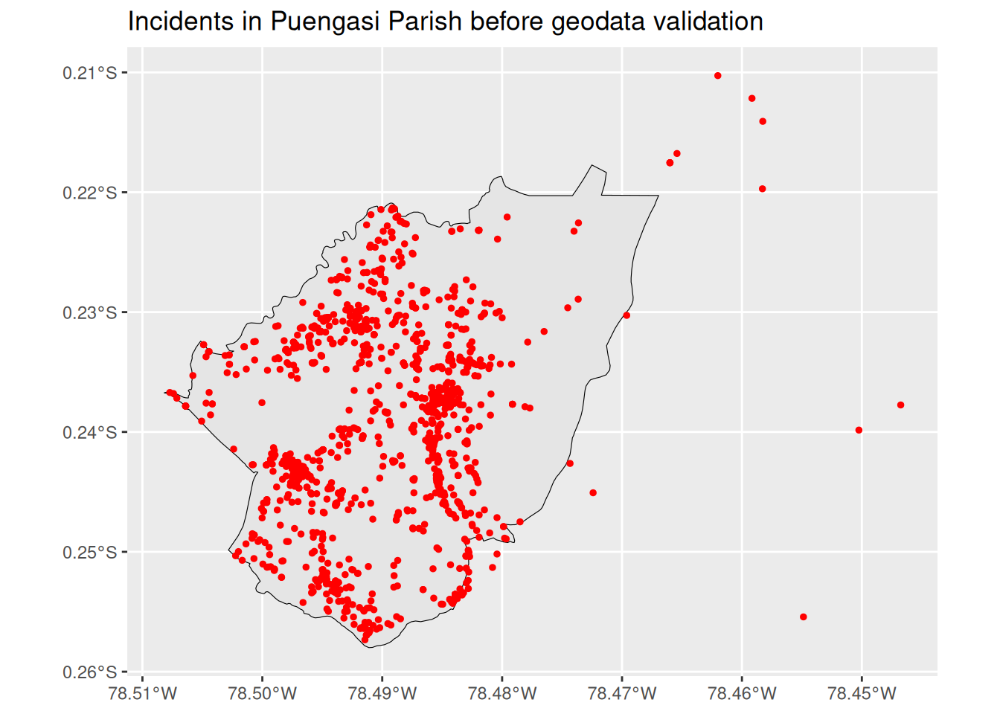
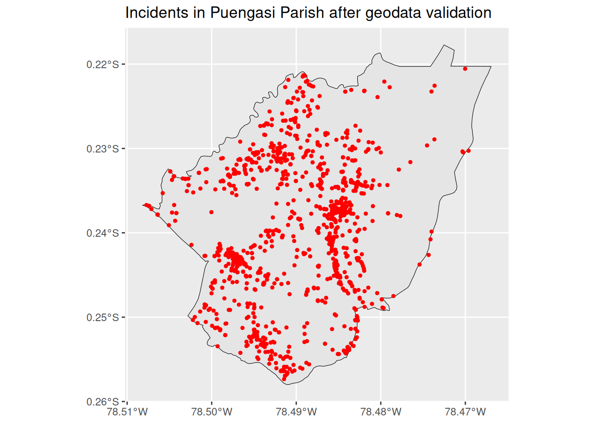

As part of an old project of mine that I recently restarted, here I document an interesting, small machine learning imputation exercise. Crime data in Ecuador is scarce, limited, and full of errors. Indeed, not too long ago, Ecuador’s Ministry of the Interior released, for the very first time, tables with records of illegal activities for the whole country on its official open data portal.
In this exercise, I will focus on the “detained-apprehended” dataset. This table contains records of people who have been either detained or apprehended by the National Police from 2019 to 2025. The whole dataset comprises more than 560,000 records. However, for the data imputation exercise, I will use a subset focusing on Ecuador’s capital, Quito.
The data contains more than 30 variables (e.g., sex, age, province, type of place, and so on) for each individual event. There are plenty of missing values, often recorded as SIN_DATO, which in Spanish literally translates to “no data point.”
With an idea of mine to use this data for a crime dashboard of the city of Quito (which I’ll post here at some point), I need the ICCS code (International Classification of Crime for Statistical Purposes) as defined by the United Nations — a harmonized way to record crime statistics. Fortunately for me, the original data contains the ICCS code for most cases, along with a brief (and sometimes incomplete) description of the event under my country’s Penal Code. However, around 31% of records at national level were missing this code.
After further inspection, I noticed that a bit more than half of the missing-ICCS records belonged to two non-ICCS-categorizable types of events: “BOLETAS” and “APREMIO” (arrest warrants and court orders). But even after filtering those out, only for Quito, 11.7% of the data remained missing.
Setting the legal angle aside, from my perspective as a biostatistician, 11.7% missing data is worrisome — assuming, of course, that data like this would be used to inform policy decisions, which sadly isn’t something the authorities of my country are known for.
Anyway, the main goal here is to walk you through a series of steps for data imputation, starting from a simple lookup table and ending, inevitably, in manual curation.
Data description
The original dataset contains 35 variables. In a preprocessing step (not included here), three extra columns were added: decode_iccs, area_lugar, and clase_tipo_lugar. decode_iccs is the decoded description of the ICCS code in codigo_iccs; area_lugar denotes whether the parish (parroquia in Spanish) belongs to the urban or rural part of Quito; and clase_tipo_lugar is a re-classification of the tipo_lugar variable that groups its original 119 categories into 12.
Show the code
library(dplyr)pay <-"projects/iccs-imputation"apren <-readRDS(here::here(pay, "raw_data/apren.rds")) # Quito data onlyapren_total <-readRDS(here::here(pay, "raw_data/apren_total.rds")) # The whole data set (including Quito)str(apren)
As you can see, there are plenty of variables that could work as predictors for any imputation process. However, for the time being, I will only mention one: presunta_infraccion. This variable contains a brief description, under the Ecuadorian Penal Code, of the reason for the detention/apprehension of an individual. So, it is easy to expect that this particular column must be highly correlated with my ICCS codes of interest, even though it contains 76 different classes.
Geospatial validation
Before jumping into any analysis, it is worth validating whether records actually belong where they claim to. Since my goal is to use this data to build an interactive dashboard of crime in Quito, ensuring the spatial accuracy of the underlying records is an essential first step.
Although these records originate from police reports, the parish assigned to an incident is not necessarily error-free. An event may have occurred in one parish while the responding officer recorded a neighboring one. Fortunately, most records also include geographic coordinates, allowing us to independently verify whether the reported parish matches the incident’s actual location.
As a simple sanity check, I randomly selected one parish and overlaid its administrative boundary with the coordinates of all incidents assigned to it.
Hide the code
library(ggplot2)library(sf)quito_parroquias <-readRDS(here::here(pay, "raw_data/quito_parroquias.rds"))puengasi <- apren |>filter(nombre_parroquia =="PUENGASI") |>st_as_sf(coords =c("longitud", "latitud"), crs =4326)quito_parroquias |>filter(dpa_despar =="PUENGASI") |>ggplot()+geom_sf(color ="black")+geom_sf(data = puengasi, color ="red", size =1)+labs(title ="Incidents in Puengasi Parish before geodata validation")

As you can see, there are points well outside the parish boundary, and others sitting right on the edge. So, as a validation step, we need to make sure points falling completely outside a parish get relabeled with the parish they actually belong to, while points near the boundary stay as originally recorded — a coordinate a few meters off a line shouldn’t override a human’s judgment call.
Hide the code
qc_parroquia_function <-function(df, parroquias,campo_parroquia_poligono ="dpa_despar",campo_parroquia_registrada ="nombre_parroquia",tolerancia_borde_m =50,outpath_validas =NULL,outpath_invalidas =NULL,out_path = pay) {## --- Step 1: separate absent and non-numeric coordinates ------------------ sin_coords <- df |>filter(is.na(longitud) |is.na(latitud) |!is.finite(longitud) |!is.finite(latitud)) |>mutate(parroquia_corregida =NA_character_, parroquia_coincide =NA) con_coords <- df |>filter(!is.na(longitud), !is.na(latitud),is.finite(longitud), is.finite(latitud)) pts <-st_as_sf(con_coords, coords =c("longitud", "latitud"), crs =4326, remove =FALSE)## --- Step 2: Spatial join with no tolerance -----------------------# largest = TRUE solves the case where a point is right on the limit of a parish# and selects the parish where the major intersects exists, thus avoiding row duplications join_exacto <-st_join(pts, parroquias[campo_parroquia_poligono], join = st_intersects, largest =TRUE) pts$parroquia_espacial <- join_exacto[[campo_parroquia_poligono]]## --- Step 3: For points that did not fall within any polygon,## re-attempts with a little buffer (capture cases with boundary rounding) idx_sin_match <-which(is.na(pts$parroquia_espacial))if (length(idx_sin_match) >0) { parroquias_buffer <- parroquias |>st_transform(32717) |>st_buffer(tolerancia_borde_m) |>st_transform(4326) join_buffer <-st_join(pts[idx_sin_match, ], parroquias_buffer[campo_parroquia_poligono],join = st_intersects, largest =TRUE) pts$parroquia_espacial[idx_sin_match] <- join_buffer[[campo_parroquia_poligono]] }## --- Step 4: Thos without a match, are left out of Quito --------------- pts$parroquia_corregida <-ifelse(is.na(pts$parroquia_espacial), "NO_EN_QUITO", pts$parroquia_espacial)## --- Step 5: compare records with parish determined by coordinates ---------------- registrado_norm <- pts[[campo_parroquia_registrada]] espacial_norm <- pts$parroquia_corregida pts$parroquia_coincide <- registrado_norm == espacial_norm con_coords_final <-st_drop_geometry(pts) |>select(-parroquia_espacial)## --- Step 6: bind rows and save ---- resultado <-bind_rows(con_coords_final, sin_coords) n_discrepancias <-sum(resultado$parroquia_coincide ==FALSE, na.rm =TRUE) n_fuera_quito <-sum(resultado$parroquia_corregida =="NO_EN_QUITO", na.rm =TRUE)cat("=== QC Counties (spatial validation) ===\n")cat("Total records:", nrow(resultado), "\n")cat("Recorded parish does not coincide with geospatial info:", n_discrepancias,sprintf("(%.2f%%)\n", 100* n_discrepancias /nrow(resultado))) cat("Points out of any parish (possibly out of Quito):", n_fuera_quito, "\n")if (!is.null(outpath_validas)) {saveRDS(resultado, here::here(out_path, outpath_validas)) }if (!is.null(outpath_invalidas)) { discrepancias <- resultado |>filter(parroquia_coincide ==FALSE)saveRDS(discrepancias, here::here(out_path, outpath_invalidas)) } resultado}qc_parroquia_function(df = apren, parroquias = quito_parroquias, outpath_validas ="raw_data/validas.rds",outpath_invalidas ="raw_data/invalidas.rds")# === QC Counties (spatial validation) ===# Total records: 76989 # Recorded parish does not coincide with geospatial info: 1310 (1.70%)# Points out of any parish (possibly out of Quito): 38
Once we do that, checking the map again shows our points looking much better:
Hide the code
apren_validas <-readRDS(here::here(pay, "raw_data/validas.rds"))puengasi <- apren_validas |>filter(parroquia_corregida =="PUENGASI") |>st_as_sf(coords =c("longitud", "latitud"), crs =4326)quito_parroquias |>filter(dpa_despar =="PUENGASI") |>ggplot()+geom_sf(color ="black")+geom_sf(data = puengasi, color ="red", size =1)+labs(title ="Incidents in Puengasi Parish after geodata validation")

In total, 1,310 records had a recorded parish that didn’t match the geospatial data, and were corrected accordingly.
Finally, 38 records were flagged as possibly falling outside Quito altogether, and a handful more ended up with no corrected parish name at all (parroquia_corregida equal to "NO_EN_QUITO" or missing, respectively).
After further inspection, I found that the first group of records fell in areas where parish boundaries don’t align perfectly, or in undefined sections of the map — possibly disputed zones between neighboring parishes. The second group consisted of records with missing geographic coordinates entirely. For both cases, I reassigned parroquia_corregida back to the originally reported parish, on the reasoning that an ambiguous boundary case shouldn’t override a human’s original judgment.
Show the code
no_en_quito <- apren_validas |>filter(parroquia_corregida =="NO_EN_QUITO") |>st_as_sf(coords =c("longitud", "latitud"), crs =4326)quito_parroquias |>ggplot()+geom_sf(color ="black")+geom_sf(data = no_en_quito, color ="red", size =1)+labs(title ="Incidents flagged as 'possibly out of Quito'\nafter geodata validation")
With that, we consolidate the first QC filter for the data.
Understanding the missing data
As I briefly mentioned in the introduction, several records are missing an ICCS code. Let’s look at this in more detail, keeping in mind the following two sets of data:
The crime data only for Quito (the one we already corrected the parish for, above), and
The crime data for all of Ecuador (including Quito).
First, for both sets of data, we remove rows where presunta_infraccion corresponds to arrest warrants and court orders (recall we already know these have no ICCS code to begin with).
More importantly, we then look at the high-level missingness pattern for the Quito-only data. A common mistake would be to jump directly into an imputation scheme without first taking a look at what we can accomplish with what we already have at hand.
Understanding the available predictors, we can reasonably assume presunta_infraccion might be a valuable source of information for recovering ICCS codes, since this variable is essentially a one-sentence summary under the Penal Code that should correlate strongly with the UN’s harmonized classification.
In other words, with some simple data wrangling between the data for Quito and the data for the whole country, we can first define a deterministic strategy to impute the missing values of codigo_iccs. A perfect match between a presunta_infraccion class and codigo_iccs would be a strict 1:1 relationship — a given class always maps to the same ICCS code. That standard can be too strict in practice, though, so instead I used a 95% dominance threshold: if a presunta_infraccion class maps to more than one ICCS code, I assign the missing record the code that accounts for at least 95% of its known cases.
With that in mind, let’s see how much of the missing data we can resolve deterministically:
Show the code
apren_work <- apren_validas |>filter(!presunta_infraccion %in%c("BOLETAS", "APREMIO"))apren_work_total <- apren_total |>filter(!presunta_infraccion %in%c("BOLETAS", "APREMIO"))n_total <-nrow(apren_work)n_missing_iccs <-sum(is.na(apren_work$codigo_iccs))## --- How deterministic is presunta_infraccion -> codigo_iccs? -------------determinismo <- apren_work_total |>filter(!is.na(codigo_iccs), !is.na(presunta_infraccion)) |>group_by(presunta_infraccion) |>summarise(n_distinct_codes =n_distinct(codigo_iccs),dominant_code =names(sort(table(codigo_iccs), decreasing =TRUE))[1],pct_dominant_code =max(table(codigo_iccs)) /n(),n_records =n(),.groups ="drop" ) |>arrange(desc(n_distinct_codes)) categorias_ambiguas <- determinismo |>filter(pct_dominant_code <0.95)categorias_deterministas <- determinismo |>filter(pct_dominant_code >=0.95)## --- How much of the missingness can lookup alone resolve? ----------------missing_con_infraccion <- apren_work |>filter(is.na(codigo_iccs), !is.na(presunta_infraccion))missing_sin_infraccion <- apren_work |>filter(is.na(codigo_iccs), is.na(presunta_infraccion))n_resoluble_por_lookup <- missing_con_infraccion |>filter(presunta_infraccion %in% categorias_deterministas$presunta_infraccion) |>nrow()n_necesita_modelo <- n_missing_iccs - n_resoluble_por_lookupreport <-c(paste("DETERMINISM CHECK -", Sys.time()),"=====================================================","",paste("Total records in Quito:", n_total),paste("Missing codigo_iccs in Quito:", n_missing_iccs,sprintf("(%.1f%%)", 100* n_missing_iccs / n_total)),"",paste("Categories of presunta_infraccion >95% deterministic (1 code):",nrow(categorias_deterministas), "out of", nrow(determinismo)),paste("Ambiguous categories (2+ possible codes):", nrow(categorias_ambiguas)),"","Detail of ambiguous categories (these need more than a simple lookup):",capture.output(print(as.data.frame(categorias_ambiguas))),"","-----------------------------------------------------","CONCLUSION:",sprintf(" %d out of %d missing values (%.1f%%) can be solved by a simple lookup table", n_resoluble_por_lookup, n_missing_iccs,100* n_resoluble_por_lookup / n_missing_iccs),sprintf(" %d out of %d missing values (%.1f%%) require another approach.", n_necesita_modelo, n_missing_iccs,100* n_necesita_modelo / n_missing_iccs),"-----------------------------------------------------")cat(paste(report, collapse ="\n"), "\n")
DETERMINISM CHECK - 2026-08-06 23:52:25.976749
=====================================================
Total records in Quito: 59903
Missing codigo_iccs in Quito: 6980 (11.7%)
Categories of presunta_infraccion >95% deterministic (1 code): 21 out of 48
Ambiguous categories (2+ possible codes): 27
Detail of ambiguous categories (these need more than a simple lookup):
presunta_infraccion
1 DELITOS CONTRA EL DERECHO A LA PROPIEDAD
2 DELITOS CONTRA LA EFICIENCIA DE LA ADMINISTRACIÓN PÚBLICA
3 DELITOS CONTRA LA INTEGRIDAD SEXUAL Y REPRODUCTIVA
4 DELITOS CONTRA LA SEGURIDAD PÚBLICA
5 DIVERSAS FORMAS DE EXPLOTACIÓN
6 DELITOS CONTRA LA INVIOLABILIDAD DE LA VIDA
7 DELITOS CONTRA PERSONAS Y BIENES PROTEGIDOS POR EL DERECHO INTERNACIONAL HUMANITARIO
8 INFRACCIÓN
9 CONTRAVENCIONES DE TRÁNSITO
10 DELITOS CONTRA EL DERECHO A LA CULTURA
11 DELITOS CONTRA LA INTEGRIDAD PERSONAL
12 DELITOS ECONÓMICOS
13 DELITOS CONTRA LA SEGURIDAD DE LOS ACTIVOS DE LOS SISTEMAS DE INFORMACIÓN Y COMUNICACIÓN
14 DELITOS CONTRA LA TUTELA JUDICIAL EFECTIVA
15 DELITOS DE VIOLENCIA CONTRA LA MUJER O MIEMBROS DEL NÚCLEO FAMILIAR
16 CONTRAVENCIONES CONTRA LA EFICIENCIA DE LA ADMINISTRACIÓN PÚBLICA
17 DELITOS CONTRA DEL RÉGIMEN MONETARIO
18 DELITOS CONTRA EL DERECHO A LA SALUD
19 DELITOS CONTRA EL DERECHO AL TRABAJO Y LA SEGURIDAD SOCIAL
20 DELITOS CONTRA EL RÉGIMEN DE DESARROLLO
21 DELITOS CONTRA EL SISTEMA FINANCIERO
22 DELITOS CONTRA LA ADMINISTRACIÓN ADUANERA
23 DELITOS CONTRA LA BIODIVERSIDAD
24 DELITOS CONTRA LA GESTIÓN AMBIENTAL
25 DELITOS CONTRA LOS DERECHOS DE LOS CONSUMIDORES, USUARIOS Y OTROS AGENTES DEL MERCADO
26 DELITOS CONTRA LOS RECURSOS NATURALES
27 TERRORISMO Y SU FINANCIACIÓN
n_distinct_codes dominant_code pct_dominant_code n_records
1 20 04011 0.3683082 82097
2 14 0809 0.6879826 20204
3 9 0102 0.4879335 12514
4 6 090111 0.9378217 33420
5 6 030221 0.5157593 349
6 5 0102 0.6968641 7175
7 5 110133 0.4127907 344
8 5 02063 0.7080208 1733
9 4 020721 0.7480563 47074
10 4 07042 0.7647059 204
11 4 020111 0.8144114 9548
12 4 07041 0.6311881 404
13 3 09031 0.6049383 81
14 3 08069 0.6775932 4454
15 3 020111 0.8145167 30434
16 2 0904 0.5588235 34
17 2 070212 0.5030581 654
18 2 02071 0.9137931 174
19 2 08082 0.8181818 11
20 2 07035 0.5774648 142
21 2 07019 0.9174312 109
22 2 08044 0.9276190 525
23 2 10041 0.7275748 602
24 2 10019 0.8709677 31
25 2 08043 0.6222222 45
26 2 10012 0.6792453 53
27 2 09051 0.9020501 7024
-----------------------------------------------------
CONCLUSION:
713 out of 6980 missing values (10.2%) can be solved by a simple lookup table
6267 out of 6980 missing values (89.8%) require another approach.
-----------------------------------------------------
So, from the report above: 10.2% of the missing values (713 out of 6,980) can be resolved directly with a simple lookup table, while the remaining 89.8% (6,267 out of 6,980) need something more — which, at the end of the day, is a good justification to go ahead with a fancier imputation method.
Are we missing something else?
At this point, one might think we’re ready to impute the missing data with a fancier algorithm. But recall, from the data description section, that presunta_infraccion had 76 classes1.
In the report above, though, we only found 48 classes with a valid ICCS code somewhere in the data. We’d expect every class to show at least some missingness — that’s not what happened here. This means we’re facing a classic cold-start problem: as things stand, no classifier we train will have any data to learn from for these orphan classes.
I deliberately skipped computing how much missing data the ambiguous categories alone can help resolve — let’s do that now:
Show the code
presunta_pred_class <- apren_work |>filter(is.na(codigo_iccs)) |>select(presunta_infraccion) |>distinct() |>pull()no_resoluble_por_modelo <- apren_work |>filter(is.na(codigo_iccs)) |>filter(!presunta_infraccion %in%c(intersect(presunta_pred_class, categorias_ambiguas$presunta_infraccion),intersect(categorias_deterministas$presunta_infraccion, presunta_pred_class))) n_no_resoluble_por_modelo <-nrow(no_resoluble_por_modelo)report <-c(paste("DETERMINISM CHECK (Updated conclusion) -", Sys.time()),"=====================================================","",paste("Total records:", n_total),paste("Missing codigo_iccs:", n_missing_iccs,sprintf("(%.1f%%)", 100* n_missing_iccs / n_total)),"-----------------------------------------------------","CONCLUSION:",sprintf(" %d out of %d missing values (%.1f%%) can be solved by a simple lookup table", n_resoluble_por_lookup, n_missing_iccs,100* n_resoluble_por_lookup / n_missing_iccs),sprintf(" %d out of %d missing values (%.1f%%) can be solved by a model.", (n_necesita_modelo - n_no_resoluble_por_modelo), n_missing_iccs,100* (n_necesita_modelo - n_no_resoluble_por_modelo) / n_missing_iccs),sprintf(" %d out of %d missing values (%.1f%%) cannot be solved by a model", n_no_resoluble_por_modelo, n_missing_iccs,100* n_no_resoluble_por_modelo / n_missing_iccs),"-----------------------------------------------------")cat(paste(report, collapse ="\n"), "\n")
DETERMINISM CHECK (Updated conclusion) - 2026-08-06 23:52:26.005865
=====================================================
Total records: 59903
Missing codigo_iccs: 6980 (11.7%)
-----------------------------------------------------
CONCLUSION:
713 out of 6980 missing values (10.2%) can be solved by a simple lookup table
4006 out of 6980 missing values (57.4%) can be solved by a model.
2261 out of 6980 missing values (32.4%) cannot be solved by a model
-----------------------------------------------------
So, 2,261 records belong to orphan ICCS classes. Let’s take a look at them:
# A tibble: 19 × 2
presunta_infraccion n
<chr> <int>
1 OTROS 902
2 DELITOS CULPOSOS DE TRÁNSITO 816
3 DELITO 413
4 DELITOS CONTRA LA ACTIVIDAD HIDROCARBURÍFERA, DERIVADOS DE HIDROCARBUR… 48
5 DELITOS QUE COMPROMETEN LA SEGURIDAD EXTERIOR DE LA REPUBLICA 13
6 PREVARICATO 13
7 DE LA PROTECCIÓN CONTRA EL MALTRATO, ABUSO, EXPLOTACIÓN SEXUAL, TRÁFIC… 11
8 DELITO RELATIVO A LA TRATA DE PERSONAS 10
9 DELITOS CONTRA LOS PRESOS O DETENIDOS 8
10 CONSERVACION INDEBIDA DE EXPLOSIVOS 6
11 DELITOS CONTRA LA LIBERTAD INDIVIDUAL 6
12 CIERTOS DELITOS PROMOVIDOS O EJECUTADOS POR MEDIO DE ACTIVIDADES TURIS… 5
13 DEL ROBO 3
14 FALSIFICACION DE MONEDAS, BILLETES DE BANCO, TITULOS AL PORTADOR Y DOC… 2
15 ABANDONO A PERSONAS 1
16 DEL HURTO 1
17 DELITOS RELATIVOS A LA EXTRACCION Y TRAFICO ILEGAL DE ORGANOS 1
18 INTIMIDACIÓN 1
19 ORDENANZA 1
As you can see, there are 19 orphan classes, which may or may not need manual curation. Either way, let’s set them aside until the very end. For now, let’s prepare the ground for the machine learning approach that will help us impute the missing values whose presunta_infraccion classes are represented in the ICCS-coded training data.
Dealing with the other predictors
Now that we’ve identified the need to filter out the orphan classes of one variable, it’s a good time to look a bit closer at the rest of the predictors we’ll use later. Unlike the section above, we shouldn’t expect major issues here, since these correspond to more commonly used metadata fields with far fewer classes (e.g., sex, type of weapon, condition, and so on).
Still, it’s worth checking whether we can simplify the complexity that any model will have to deal with later. As it turns out, some categories within certain variables won’t necessarily appear in the prediction set at all. For instance, the class "INTERSEXUAL" is present in the sexo variable, but it disappears entirely once we filter down to only the rows with a missing codigo_iccs.
For this, we will already start defining our training and prediction data sets. On the one hand, for the training set we will try to conserve as much information as we can. I mention this because, at this point, we already know that there are 21 presunta_infraccion categories with a good relationship to one or a few codes, which we are going to impute deterministically. However, leaving them out of the training set might reduce the accuracy we compute further on. Notice, then, how in the code below we only filter out from the training set (which is going to be the full dataset for the whole country) the classes of presunta_infraccion that are not resolvable by either determinism or a classification algorithm.
Hide the code
apren_train <- apren_work_total |>filter(!is.na(codigo_iccs)) |>filter(!presunta_infraccion %in%c(unique(no_resoluble_por_modelo$presunta_infraccion)))#,#categorias_deterministas$presunta_infraccion))apren_pred <- apren_work |>filter(is.na(codigo_iccs)) |>filter(!presunta_infraccion %in%c(unique(no_resoluble_por_modelo$presunta_infraccion), categorias_deterministas$presunta_infraccion))cat(c("Training set: Number of records, variable sexo",capture.output(print(table(apren_train$sexo)))), sep ="\n")
Training set: Number of records, variable sexo
HOMBRE INTERSEXUAL MUJER
371926 86 49129
Hide the code
cat(c("Prediction set: Number of records, variable sexo",capture.output(print(table(apren_pred$sexo)))), sep ="\n")
Prediction set: Number of records, variable sexo
HOMBRE MUJER
3384 622
Now, we see that only 86 records fall into the "INTERSEXUAL" class within what will become our training set, and none of them appear in the prediction set at all. Dropping these 86 records — and, with them, an entire rare category from one predictor — is a net gain in both noise reduction and fitting speed for whatever imputation model we end up using.
That said, this kind of decision only makes sense as long as we don’t lose other important information along the way. Consider this hypothetical: one of the provinces with the most crime records is “GUAYAS”. Since we are not going to impute data from Guayas province (Quito is located in Pichincha province), we might feel tempted to simply filter out GUAYAS (and all the other provinces, for that matter). If we deleted all records except those belonging to Quito from the training set on that basis, we could still hurt the model — patterns tied to GUAYAS’s other predictors (sex, place, weapon type) that happen to be genuine signatures of a given ICCS code would be lost right along with it, even though GUAYAS itself was never the issue.
To make sure we don’t do that by accident, let’s look at the predictors we consider useful that also have up to 20 classes2, and see how many categories we can safely drop from the training set without risking a loss in classification accuracy:
We have now arrived at the imputation step! We have a clear picture of what we are going to do:
Impute ICCS codes with 95% or more dominance deterministically, via a lookup table.
Impute ambiguous ICCS codes via a classification algorithm.
Figure out what to do with orphan classes of presunta_infraccion.
So, without further ado, let’s start:
Lookup table
Quickly, we will implement a simple lookup table matching the code for the categories we flagged as deterministic, and check whether the 713 records are correctly matched:
And, as simple as that, we solved 10.2% of the missing data. Now, let’s jump to the classification algorithm for the 57.4% solvable by a model.
Random forest
For the ambiguous cases, we are now going to try to impute these using a Random Forest (RF) classifier. I think that, among other classification methods, RF is well suited because it can capture complex, nonlinear relationships among numerous categorical predictors, requires minimal feature engineering, and is robust to noisy administrative data such as we have in this exercise.
So, since we have almost already finished defining our full training set, I am going to go through this process step by step:
At the beginning of this post, we had a quick view of the variables in the original data (38 in total). Among those, there are variables we can easily leave out of the training (e.g., nombre_parroquia, codigo_parroquia, nombre_canton, and so on), as these do not contribute meaningful information for the imputation. For example, nombre_parroquia refers to the political division of each province into smaller units called parishes. If I add nombre_parroquia as a predictor the way I have defined my problem, this would imply a predictor with as many levels as there are parishes in Ecuador (which is thousands) — and that, in the end, will not fit my purpose of predicting missing ICCS classes in the city of Quito. It would make more sense if my goal were to use only the data from Quito to train and predict.
However, we have others that can be disaggregated into even more variables that could help improve accuracy. For example, hora_detencion_aprehension registers the hour at which the event took place, and edad, the age of the offender. In crime statistics, it is well known that some types of crimes are highly correlated with the time at which they occur and the age of the perpetrator. With that in mind, let’s create more predictors from hora_detencion_aprehension and edad. This means adding the following code to our pipeline:
Hide the code
library(lubridate)# Because of my location, R uses local date features, so I make sure that the days are named in a language I understand: dias <-c(Montag ="lunes",Dienstag ="martes",Mittwoch ="miercoles",Donnerstag ="jueves",Freitag ="viernes",Samstag ="sabado",Sonntag ="domingo")apren_train <- apren_train |>mutate(fecha_hora =ymd_hms(paste(fecha_detencion_aprehension, hora_detencion_aprehension)),year =format_ISO8601(fecha_detencion_aprehension, precision ="y"),hora =hour(fecha_hora),dia =recode(weekdays(fecha_detencion_aprehension), !!!dias)) |>mutate(# Convierte "SIN_DATO" a NA y extrae el número si viene como "23 AÑOS"edad_num =as.numeric(edad),# Grupos etariosedad_grupo =case_when(is.na(edad_num) ~"SIN_DATO", edad_num <18~"Menor de edad", edad_num <30~"18-29", edad_num <45~"30-44", edad_num <60~"45-59",TRUE~"60+" )) |>add_count(codigo_iccs, name ="n_iccs") |>filter(n_iccs >=10) |>select(-n_iccs)
Here I create a new variable, fecha_hora, by combining the date and time of the event; another variable, year, to extract the year of the event; a variable hora, which extracts the hour from fecha_hora; and finally a variable called dia, which extracts the day of the event, formatted in Spanish.
Then, edad is converted to numeric and later transformed back into a categorical variable. The reason for doing this is the presence of missing observations. Remember, in this dataset, missing observations are coded with the string SIN_DATO. Ideally, I would try to use numeric variables as predictors too, but the problem arises when converting character variables to numeric: a string like the one I just mentioned gets converted to a missing value. RF relies on complete data for training. In other words, if I leave NAs in, the model will stop executing and give me an error message because of the missing data points.
In this scenario, I have a few options: one would be to somehow impute the missing numeric data, and the other is the step I took above — categorizing the numeric variable. You might wonder, so what’s the correct way? Well, this is a modeller’s choice, and in modelling there is no such thing as strictly correct or wrong, only it works well enough for me.
Anyway, just to mention it: among my purely categorical variables, the string SIN_DATO appears over and over again. Instead of racking my brain trying to cleverly impute these, the easiest solution is to leave them as they are. At the end of the day, a missing observation can also be a source of information. For example, it’s possible that, in a given year, in a given location (either province or parish), the responding officers did not have the necessary training or experience when reporting, so they left these fields of the report blank. This might sound like overthinking, but there can be patterns hidden in places we will never be aware of.
Finally, what I do in the last three lines of the pipeline above is filter out records from the training set whose ICCS code appears fewer than 10 times. The reason for doing this is that, for the actual training subset, I will split the whole training set into 80% and 20% (80% for training the model, 20% for validating it). This partition must try to ensure that this proportion holds across all possible classes of all predictors. So, if there is only one record with a particular ICCS code, the partition will proceed with a warning, but the RF will still include it, attempting to predict this very rare event.
3. Define the modeling framework
We are almost ready! The only step left is deciding how we are going to fit the model. In my case, the answer is clear: I will fit this data to an RF in R.
For this, a very well-known R option is randomForest, via the caret package. However, given the number of rows I have at hand (more than 400,000), fitting this data could become a problem for randomForest, as it becomes considerably slow and, in the end, consumes my laptop’s RAM without even being capable of producing an output.
In light of this, fortunately there is an alternative: the ranger package. Unlike randomForest, ranger handles large, high-dimensional datasets better, as it is a modern RF implementation written in C++ and, more importantly, does not hold the entire dataset in memory the way randomForest does — preventing (to some extent) my laptop from crashing in the process.
Now, with this in mind, the next step is to define and train the model.
4. Training and validating the Random Forest model
We are now finally at a stage where we have everything ready to train an RF model. For this, we are going to split the whole training dataset into two subsets: a training subset (80% of the whole training set) and a validation subset (20% of the whole training set).
In the ranger package, there are several options for controlling and fine-tuning a model. Here, we will keep things simple by starting with a moderately low number of trees (500), with importance measured via a permutation method.
As our baseline model, let’s start with 15 predictors:
tipo: indicator of whether the individual was apprehended or detained (2 classes).
estado_civil: whether the individual is married, divorced, etc. (6 classes).
estatus_migratorio: migratory status (4 classes + SIN_DATO flag).
edad_grupo: age group (5 classes + SIN_DATO flag).
year: year in which the event was registered (continuous, from 2019 to 2025).
hora: hour of the day in which the event took place (continuous, from 0 to 23).
dia: day of the week in which the event took place (7 classes).
sexo: biological sex of the individual (2 classes).
nivel_de_instruccion: highest education level reported by the individual (7 classes).
condicion: description of whether the detained individual was or was not under the influence of drugs or alcohol (7 classes + SIN_DATO flag).
movilizacion: type of vehicle used by the individual (10 classes + SIN_DATO flag).
tipo_arma: weapon type the individual was found carrying (3 classes + SIN_DATO flag).
clase_tipo_lugar: type of place where the event took place (11 classes).
codigo_provincia: code unique to the province where the event took place (25 classes).
presunta_infraccion: one-sentence description of the event under the Penal Code (expected to be highly correlated with the ICCS codes), with 46 classes in the training set.
Hide the code
library(caret)library(ranger)library(tibble)apren_train_mod1 <- apren_train |>select(codigo_iccs, tipo, estado_civil, estatus_migratorio, edad_grupo, year, hora, dia, sexo, nivel_de_instruccion, condicion, movilizacion, tipo_arma, clase_tipo_lugar, codigo_provincia, presunta_infraccion) |>mutate(across(all_of(c("codigo_iccs","tipo", "estado_civil","estatus_migratorio","edad_grupo","dia","sexo","nivel_de_instruccion","condicion","movilizacion","tipo_arma","clase_tipo_lugar","codigo_provincia","presunta_infraccion")), as.factor))# hold out 20% of the complete cases as testing validation setset.seed(1410)idx_val <-createDataPartition(apren_train_mod1$codigo_iccs, p =0.8, list = F)train_set <- apren_train_mod1[idx_val, ]val_set <- apren_train_mod1[-idx_val, ]modelo_rf1 <-ranger( codigo_iccs ~ .,data = train_set, num.trees =500, importance ="permutation",seed =1460,num.threads =6)# importanceimp_rf1 <-tibble(variable =names(modelo_rf1$variable.importance),importance = modelo_rf1$variable.importance) |>arrange(desc(importance))# predictions on the validation set:preds_rf1 <-predict(modelo_rf1, data = val_set)# confusion matrix:cm_rf1 <-confusionMatrix(preds_rf1$predictions, val_set$codigo_iccs)
Once we run our first model, let’s have a look at some of the output, starting with importance:
Hide the code
imp_rf1
# A tibble: 15 × 2
variable importance
<chr> <dbl>
1 presunta_infraccion 0.567
2 condicion 0.0895
3 movilizacion 0.0771
4 clase_tipo_lugar 0.0642
5 tipo_arma 0.0478
6 codigo_provincia 0.0311
7 hora 0.0286
8 year 0.0275
9 tipo 0.0238
10 dia 0.0162
11 nivel_de_instruccion 0.0139
12 edad_grupo 0.0103
13 estado_civil 0.00845
14 sexo 0.00717
15 estatus_migratorio 0.00195
From this output, I can see that the variables at the bottom of the table contribute very little to the model. I can get rid of some of these without much justification beyond a trial-and-error approach aimed at increasing accuracy. With that said, let’s take a quick look at the accuracy of the model — simply put, the proportion of times the prediction on the validation set matched the real, already-known value:
At first glance, we see that our model correctly predicts the ICCS code in 83.01% of cases. This might not seem like a huge improvement, but let’s discuss that in a bit.
From here, further steps could aim to increase accuracy — one of them being to increase the number of trees in our RF. This can be achieved simply by increasing the num.trees argument of the ranger function in the code above. In my case, I increased it from 500 to 1000, and here are the results (feel free to run this small improvement yourself):
Hide the code
imp_rf2 # random forest with 1000 trees
# A tibble: 15 × 2
variable importance
<chr> <dbl>
1 presunta_infraccion 0.567
2 condicion 0.0894
3 movilizacion 0.0765
4 clase_tipo_lugar 0.0640
5 tipo_arma 0.0476
6 codigo_provincia 0.0312
7 hora 0.0286
8 year 0.0276
9 tipo 0.0238
10 dia 0.0162
11 nivel_de_instruccion 0.0139
12 edad_grupo 0.0102
13 estado_civil 0.00845
14 sexo 0.00714
15 estatus_migratorio 0.00194
As you can see, by doubling the number of trees we haven’t gained much. The importance table remains unchanged, and accuracy improves by roughly six hundredths of a percentage point, from 83.01% to 83.07%.
As a final step, based on the importance of my predictors, I can drop some of them. In this case, I arbitrarily chose those with importance greater than 0.017, and reran the model with 1000 trees:
Hide the code
# selecting variables with importance higher than 0.017apren_train_mod2 <- apren_train |>select(codigo_iccs, tipo, year, hora, condicion, movilizacion, tipo_arma, clase_tipo_lugar, codigo_provincia, presunta_infraccion) |>mutate(across(all_of(c("codigo_iccs","tipo","hora","condicion","movilizacion","tipo_arma","clase_tipo_lugar","codigo_provincia","presunta_infraccion")), as.factor))set.seed(1410)idx_val <-createDataPartition(apren_train_mod2$codigo_iccs, p =0.8, list = F)train_set <- apren_train_mod2[idx_val, ]val_set <- apren_train_mod2[-idx_val, ]modelo_rf3 <-ranger( codigo_iccs ~ .,data = train_set, num.trees =1000, importance ="permutation",seed =1460,num.threads =6)imp_rf3 <-tibble(variable =names(modelo_rf3$variable.importance),importance = modelo_rf3$variable.importance) |>arrange(desc(importance))preds_rf3 <-predict(modelo_rf3, data = val_set)cm_rf3 <-confusionMatrix(preds_rf3$predictions, val_set$codigo_iccs)imp_rf3 # random forest with 1000 trees and 9 predictors with importance larger than 0.017
# A tibble: 9 × 2
variable importance
<chr> <dbl>
1 presunta_infraccion 0.671
2 condicion 0.0837
3 movilizacion 0.0660
4 clase_tipo_lugar 0.0556
5 tipo_arma 0.0373
6 codigo_provincia 0.0310
7 year 0.0279
8 hora 0.0277
9 tipo 0.0226
By cutting predictors with very low importance values, I finally landed on a model with an accuracy of 84.32% — a 1.25 percentage-point gain!
From this point onward, I could keep playing around with fine-tuning the model’s parameters, but I will stop here. I personally consider that, given the noisy nature of the data and the highly unbalanced classes across the predictors, an 84.32% accuracy is a significant improvement, as I can illustrate now with the overall statistics from the confusion matrix computed above:
Hide the code
ov <- cm_rf3$overallcat("Overall Statistics\n\n",sprintf("%-24s : %.4f\n", "Accuracy", ov["Accuracy"]),sprintf("%-24s : (%.4f, %.4f)\n", "95% CI", ov["AccuracyLower"], ov["AccuracyUpper"]),sprintf("%-24s : %.4f\n", "No Information Rate", ov["AccuracyNull"]),sprintf("%-24s : %s\n", "P-Value [Acc > NIR]",format(ov["AccuracyPValue"], scientific =TRUE)),sprintf("%-24s : %.4f\n", "Kappa", ov["Kappa"]),sprintf("%-24s : %s\n", "McNemar's Test P-Value",ifelse(is.nan(ov["McnemarPValue"]),"NA",format(ov["McnemarPValue"], scientific =TRUE))))
Overall Statistics
Accuracy : 0.8432
95% CI : (0.8407, 0.8456)
No Information Rate : 0.1785
P-Value [Acc > NIR] : 0e+00
Kappa : 0.8299
McNemar's Test P-Value : NA
From the output above, we can say, in more detail:
The Random Forest classifier achieved an overall accuracy of 84.32% (95% CI: 84.1%–84.6%), meaning that more than four out of every five ICCS codes were correctly predicted on unseen data. Considering that the classification problem involves 109 different ICCS categories, this represents a strong level of predictive performance.
For comparison, the No Information Rate (17.9%) corresponds to the accuracy obtained by always predicting the single most frequent ICCS code. The model substantially outperformed this naïve baseline (p < 2.2 × 10⁻¹⁶), indicating that it learned meaningful relationships between the available predictors and the target variable, rather than simply exploiting class frequencies.
The Cohen’s Kappa coefficient of 0.829 indicates almost perfect agreement beyond chance, suggesting that the model maintains high predictive performance even after accounting for the considerable class imbalance present in the dataset. In multiclass classification problems, Kappa is often more informative than raw accuracy, because it discounts agreement that could occur simply due to dominant classes.
The McNemar’s test is reported as not applicable (NA), because it is designed for binary classification problems and does not provide a meaningful assessment for this multiclass setting.
5. Data imputation by RF
Finally, once our model has been trained and validated, we will run it one last time — this time with the whole training set — and from there, impute the missing values for our 4,006 observations solvable via the model.
Hide the code
modelo_rf4 <-ranger( codigo_iccs ~ .,data = apren_train_mod2, # the whole data set without partitionnum.trees =1000, importance ="permutation",seed =1460,num.threads =6)# formatting the prediction data for the model aboveapren_pred_model <- apren_pred |>mutate(fecha_hora =ymd_hms(paste(fecha_detencion_aprehension, hora_detencion_aprehension)),year =format_ISO8601(fecha_detencion_aprehension, precision ="y"),hora =hour(fecha_hora),dia =recode(weekdays(fecha_detencion_aprehension), !!!dias)) |>mutate(# Convierte "SIN_DATO" a NA y extrae el número si viene como "23 AÑOS"edad_num =as.numeric(edad),# Grupos etariosedad_grupo =case_when(is.na(edad_num) ~"SIN_DATO", edad_num <18~"Menor de edad", edad_num <30~"18-29", edad_num <45~"30-44", edad_num <60~"45-59",TRUE~"60+" ) ) |>select(codigo_iccs, tipo, year, hora, condicion, movilizacion, tipo_arma, clase_tipo_lugar, codigo_provincia, presunta_infraccion) |>mutate(across(all_of(c("tipo","hora","condicion","movilizacion","tipo_arma","clase_tipo_lugar","codigo_provincia","presunta_infraccion")), as.factor))apren_pred_model$codigo_iccs <-factor(apren_pred_model$codigo_iccs, levels =levels(apren_train_mod2$codigo_iccs))pred <-predict(modelo_rf4, data = apren_pred_model)apren_pred$codigo_iccs <- pred$predictions
The other demons
At this point, we have successfully imputed 67.6% of the missing ICCS codes for the city of Quito. The remaining 32.4% (2,261 records) belong to orphan classes of the presunta_infraccion variable, which, as we saw before, are the following:
# A tibble: 19 × 2
presunta_infraccion n
<chr> <int>
1 OTROS 902
2 DELITOS CULPOSOS DE TRÁNSITO 816
3 DELITO 413
4 DELITOS CONTRA LA ACTIVIDAD HIDROCARBURÍFERA, DERIVADOS DE HIDROCARBUR… 48
5 DELITOS QUE COMPROMETEN LA SEGURIDAD EXTERIOR DE LA REPUBLICA 13
6 PREVARICATO 13
7 DE LA PROTECCIÓN CONTRA EL MALTRATO, ABUSO, EXPLOTACIÓN SEXUAL, TRÁFIC… 11
8 DELITO RELATIVO A LA TRATA DE PERSONAS 10
9 DELITOS CONTRA LOS PRESOS O DETENIDOS 8
10 CONSERVACION INDEBIDA DE EXPLOSIVOS 6
11 DELITOS CONTRA LA LIBERTAD INDIVIDUAL 6
12 CIERTOS DELITOS PROMOVIDOS O EJECUTADOS POR MEDIO DE ACTIVIDADES TURIS… 5
13 DEL ROBO 3
14 FALSIFICACION DE MONEDAS, BILLETES DE BANCO, TITULOS AL PORTADOR Y DOC… 2
15 ABANDONO A PERSONAS 1
16 DEL HURTO 1
17 DELITOS RELATIVOS A LA EXTRACCION Y TRAFICO ILEGAL DE ORGANOS 1
18 INTIMIDACIÓN 1
19 ORDENANZA 1
From a quick inspection, we can tell beforehand that manual curation will be needed for some of them. For example, the orphan classes "OTROS" and "DELITO", with 902 and 413 records respectively, are too vague. These two, regardless of any approach for solving the cold-start problem, are likely to produce a wide variety of results, as the words “otros” and “delito” recur very often across the whole list of ICCS codes. In a last effort to get some machine help imputing these entries, I will show two approaches. The first is a word-similarity algorithm using Jaccard distances between the words of the orphan classes of presunta_infraccion and the decodes of the ICCS codes.
In this approach, we start by defining a similarity threshold to accept the proposed ICCS code assigned to each class. This basically represents how close the orphan class is to the ICCS decode, where 1 would be a perfect match. Then, we strip stopwords from the orphan classes (e.g., legal words such as “contravenciones” and “delitos”, as well as connective articles like “de”, “la”, etc.). Finally, the Jaccard distance is computed by comparing the orphan class with the decode word by word, and selecting the decode with the highest similarity score. The code for this is shown below:
presunta_infraccion
1 DELITOS QUE COMPROMETEN LA SEGURIDAD EXTERIOR DE LA REPUBLICA
2 OTROS
3 CONSERVACION INDEBIDA DE EXPLOSIVOS
4 DELITO
5 DELITOS CONTRA LA LIBERTAD INDIVIDUAL
6 DEL ROBO
7 PREVARICATO
8 DELITOS CONTRA LOS PRESOS O DETENIDOS
9 DELITO RELATIVO A LA TRATA DE PERSONAS
10 INTIMIDACIÓN
11 CIERTOS DELITOS PROMOVIDOS O EJECUTADOS POR MEDIO DE ACTIVIDADES TURISTICAS
12 ABANDONO A PERSONAS
13 DEL HURTO
14 FALSIFICACION DE MONEDAS, BILLETES DE BANCO, TITULOS AL PORTADOR Y DOCUMENTOS DE CREDITO
15 DELITOS RELATIVOS A LA EXTRACCION Y TRAFICO ILEGAL DE ORGANOS
16 DELITOS CONTRA LA ACTIVIDAD HIDROCARBURÍFERA, DERIVADOS DE HIDROCARBUROS, GAS LICUADO DE PETRÓLEO Y BIOCOMBUSTIBLES
17 DELITOS CULPOSOS DE TRÁNSITO
18 DE LA PROTECCIÓN CONTRA EL MALTRATO, ABUSO, EXPLOTACIÓN SEXUAL, TRÁFICO Y PÉRDIDA DE NIÑOS, NIÑAS Y ADOLESCENTES
19 ORDENANZA
mejor_match_decode
1 Actos contra la salud y la seguridad
2 Otros actos contra la libertad
3 Tráfico de armas y explosivos
4 Homicidio intencional
5 Actos contra la libertad
6 Robo
7 Homicidio intencional
8 Homicidio intencional
9 Trata de personas
10 Homicidio intencional
11 Otros actos relacionados con las actividades de un grupo terrorista
12 Trata de personas
13 Hurto
14 Actos de falsificación de documentos
15 Trata de personas con fines de extracción de órganos
16 Homicidio intencional
17 Homicidio por tránsito vehicular
18 Esclavitud y explotación
19 Homicidio intencional
codigo_asignado similitud requiere_revision_manual
1 0902 0.14285714 FALSE
2 02029 0.33333333 FALSE
3 09012 0.20000000 FALSE
4 0101 0.00000000 FALSE
5 0202 0.33333333 FALSE
6 0401 1.00000000 FALSE
7 0101 0.00000000 FALSE
8 0101 0.00000000 FALSE
9 0204 1.00000000 FALSE
10 0101 0.00000000 FALSE
11 09069 0.08333333 FALSE
12 0204 0.33333333 FALSE
13 0502 1.00000000 FALSE
14 07023 0.22222222 FALSE
15 02043 0.22222222 FALSE
16 0101 0.00000000 FALSE
17 010321 0.25000000 FALSE
18 0203 0.09090909 FALSE
19 0101 0.00000000 FALSE
As expected, some classes are assigned an ICCS code that describes them reasonably well (for example, “DELITOS CONTRA LA LIBERTAD INDIVIDUAL” is matched with “Actos contra la libertad”), but others are way off, such as “PREVARICATO” (in English, prevarication), which is matched with “Homicidio intencional” (in English, intentional homicide).
This table by itself is a good starting point for finishing the imputation through manual curation. However, just to round out this long post, I will show a quick alternative using semantic embeddings. In this case, what we’re after is semantic similarity rather than word overlap. We accomplish this using the reticulate package and the “sentence_transformer” model:
# A tibble: 19 × 5
presunta_infraccion mejor_match_decode codigo_asignado similitud
<chr> <chr> <chr> <dbl>
1 DELITOS QUE COMPROMETEN LA SEGU… Otros actos contr… 0909 0.673
2 OTROS Otros daños a bie… 05049 0.554
3 CONSERVACION INDEBIDA DE EXPLOS… Tráfico de armas … 09012 0.617
4 DELITO Delitos contra la… 0503 0.653
5 DELITOS CONTRA LA LIBERTAD INDI… Privación de libe… 02022 0.771
6 DEL ROBO Robo 0401 0.854
7 PREVARICATO Violación por pre… 030113 0.498
8 DELITOS CONTRA LOS PRESOS O DET… Delitos contra la… 0503 0.740
9 DELITO RELATIVO A LA TRATA DE P… Trata de personas 0204 0.818
10 INTIMIDACIÓN Intención delicti… 08063 0.704
11 CIERTOS DELITOS PROMOVIDOS O EJ… Otros actos delic… 1109 0.644
12 ABANDONO A PERSONAS Robo a personas 04011 0.647
13 DEL HURTO Hurto 0502 0.848
14 FALSIFICACION DE MONEDAS, BILLE… Actos contrarios … 08042 0.525
15 DELITOS RELATIVOS A LA EXTRACCI… Adopción ilegal 020291 0.641
16 DELITOS CONTRA LA ACTIVIDAD HID… Actos que causan … 10011 0.384
17 DELITOS CULPOSOS DE TRÁNSITO Delitos contra la… 0503 0.657
18 DE LA PROTECCIÓN CONTRA EL MALT… Explotación sexua… 03021 0.589
19 ORDENANZA Genocidio 11014 0.460
# ℹ 1 more variable: requiere_revision_manual <lgl>
Then, finally, with these two results and my best possible knowledge of Ecuadorian law, I will assign the codes to the orphan classes and finish my data for the upcoming dashboard I have in mind. If you made until this point, please feel free to finish that task, put all data together and play around with this nice example of official records about crime.
Conclusion
Looking back at the whole exercise, the 11.7% of missing ICCS codes I set out to “chase” at the beginning of this post turned out to be a layered problem rather than a single gap to fill. Roughly a tenth of it was resolved almost for free with a lookup table, a little over half of it yielded to a Random Forest classifier trained on the rest of the country’s data, and the remainder — the truly orphanpresunta_infraccion classes — never had a real chance of being learned by any model, because they simply had no labeled examples to learn from anywhere in the data. That last group is where the word-similarity and semantic-embedding approaches come in, and it’s also where the 0.0 similarity threshold needs some explaining.
Both the Jaccard word-overlap function and the semantic embedding function were written to accept a threshold: below it, a class is flagged as requiere_revision_manual = TRUE and left unassigned; at or above it, the best match is accepted as the proposed code. Setting that threshold to 0.0 effectively removes the “reject” branch altogether — every orphan class receives a suggested ICCS code, no matter how weak the underlying similarity score is. On its face, that looks like a strange choice for a threshold whose entire purpose is to separate good matches from bad ones.
The reasoning behind it is that, for these 19 orphan classes, every single one of them was always going to need a human decision. There was no training data to fall back on, so no numeric threshold — 0.75, 0.5, or otherwise — could have turned this into a genuinely automated step; at best, a stricter threshold would have simply relabelled some of these classes as NA instead of giving me a candidate. By setting the threshold to 0.0, I turned both algorithms into ranking tools rather than decision rules: each orphan class gets its best available match and the similarity score that produced it, side by side. That combination — the proposed decode plus how confident (or not) the algorithm was about it — is far more useful for manual curation than a binary accept/reject flag would have been, since it lets me immediately triage the good matches (e.g., “DELITOS CONTRA LA LIBERTAD INDIVIDUAL” → “Actos contra la libertad”) from the clearly wrong ones (e.g., “PREVARICATO” → “Homicidio intencional”) using my own judgment and knowledge of Ecuadorian law, rather than trusting an arbitrary cutoff to make that call for me.
In short, the 0.0 threshold isn’t a claim that “any match is a good match” — it’s an acknowledgment that, for this particular subset of the data, the algorithms were never going to replace a human reviewer, only assist one. Between the deterministic lookup table, the Random Forest model, and this final manually-curated pass over the orphan classes, all of the originally missing ICCS codes for Quito now have a value — some resolved with high confidence, others resolved with my own best judgment as a final check.
Looking forward
This was a personal project built in my spare time, not a commissioned analysis, so I decided to stop at a point where the workflow was useful and reproducible rather than trying to perfect every single detail. Still, there are a few things I would revisit if I continue working on this dataset:
The 95% dominance threshold used for the lookup table, and the 0.017 importance cutoff used for predictor selection, were practical choices rather than results from a formal sensitivity analysis. I did not test how much the results would change under different thresholds, such as 90% or 99% dominance, or alternative importance cutoffs. These choices worked reasonably well for this iteration, but they would benefit from a more systematic evaluation.
The lookup table was generated from nationwide data but applied to missing records from Quito. Reporting practices and terminology may vary across regions, meaning that a category that is highly consistent nationally may not behave exactly the same way within Quito. This is probably a small issue, but it is something worth checking in a future version.
Model comparison was performed using a single 80/20 train-validation split. The improvements observed when increasing the number of trees or reducing predictors (83.01% → 83.07% → 84.32% accuracy) could partly reflect variation from the split itself. A repeated cross-validation strategy would provide a more robust estimate of model performance.
The approximately 4,000 records imputed by the Random Forest model were not manually reviewed. I manually checked the 19 orphan categories that required semantic matching, but the larger group of model-based predictions deserves a similar quality check. With an accuracy around 84%, some predictions will inevitably be incorrect, and reviewing a random sample of imputed records would be a valuable next step before using these data in a public dashboard.
Grouping edad into age categories was a practical solution to handle missing and inconsistent values. However, this transformation also removes some information from a variable that may contain meaningful patterns for crime analysis. A more refined approach could explore alternative ways of handling missing numerical values.
Random Forest was the only predictive model evaluated. It performed well for this task, but I did not compare it against other approaches such as multinomial regression, gradient boosting, or other classification algorithms. Therefore, I can say it was a useful model for this problem, but not necessarily the optimal one.
None of these points change the main goal of the project: building a transparent and reproducible workflow to improve the quality of crime records. If I return to this dataset in the future, these are the areas where I would start improving the analysis.
Footnotes
76 classes including “BOLETAS” and “APREMIO” which do not have ICCS codes. Only 74 classes have ICCS code, 48 solvable by either lookup table (21) or a classification model (27).↩︎
20 rather than “all of them” is deliberate — it excludes presunta_infraccion (76 classes), which we’ve already handled separately above.↩︎